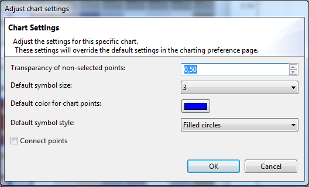

To adjust the Density Chart settings, go to the chart legend and click the Adjust settings button 
. The following dialog will pop up:

| Symbol size | This is the size in which the Scatter-Density will be shown. |
| Lo cut | Select the bottom margin of the window of data that will be used to define the colors. (e.g. If you select a lo cut of 0.1, all data under 10% of the data will be given the lowest color of the shader) |
| Hi cut | Select the upper margin of the window of data that will be used to define the colors. (e.g. If you select a hi cut of 0.9, the 10% of the highest values will be given the highest color value available in the shader) |
| Density shader | This is the color theme that will be used to show the density. (e.g. the Rainbow theme will show red as the highest density and purple as the lowest density) |
| Density weight feature | This is the feature that will be selected to calculate the density weight. |